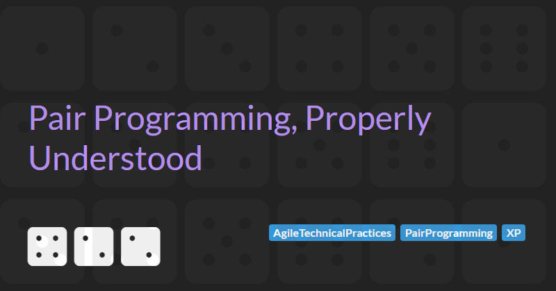

Pair Programming, Properly Understood

Pair programming is one of the most-cited and least-understood practices in our industry. It has been part of Extreme Programming since Kent Beck first wrote it down, it has more empirical research behind it than almost any other agile technical practice, and it is still the practice that most teams claim to do but very few actually do well.
I keep coming back to it because the gap between what the research found and what most teams report doing is enormous. The research reports a small but real quality benefit, a meaningful boost in confidence and knowledge transfer, and a modest cost premium. The teams I work with report long stretches of two people sat at one screen with one of them on Slack and the other slowly losing the will to live. Both of these things get filed under the same label.
This article is a deep-dive, not a tutorial. The aim is to look at the evidence honestly, to understand why so few teams realise what the data promises, and to be specific about the disciplines that separate the pairing that works from the pairing that gets quietly abandoned.
If pair programming is so well-evidenced, why do so few teams seem to get the benefit?
What the Evidence Actually Says
There is a respectable body of empirical research on pair programming, and reading it carefully gives a more nuanced picture than either the cheerleaders or the sceptics tend to offer.
The Utah study
The foundational study is Williams, Kessler, Cunningham and Jeffries 2000, often called the Utah study after the institution where it was run. Forty-one undergraduate students were split into thirteen solo developers and fourteen pairs working on the same set of programming assignments. The headline numbers, repeated everywhere since, were:
- Pairs spent roughly 15% more time than solos on the same problems.
- Pair-produced code passed 15% more of the test cases than solo-produced code.
- 96% of the participants in the pair condition said they enjoyed their work more in pairs than they had alone.
Those numbers are real, but the study is a small undergraduate experiment and should be read as evidence of a direction, not a precise effect size. It is also worth noting that the time premium and the quality premium are not symmetric: a 15% time penalty on construction is a poor proxy for total cost of ownership when defects ship to production and have to be fixed later by someone with no context.
The Norwegian replication
The most-cited industrial replication is Arisholm, Gallis, Dybå and Sjøberg 2007, which is sometimes wheeled out by sceptics as proof that pair programming does not work. It is a more careful study than the Utah one. 295 professional Java developers from 29 companies were paid to work on a set of refactoring tasks, in solos and pairs, with the experimenters varying the difficulty of the task and the seniority mix of the pair.
The Arisholm result is genuinely interesting. The headline finding was that pairing produced no statistically significant improvement in correctness on the easier tasks, and required substantially more effort overall. Pairing did, however, materially improve the proportion of correct solutions on the complex tasks, which is where the hard money in software actually lives.
I read this as evidence that pairing is a tool with a sweet spot, not a universal multiplier. If you pair two seniors on a CRUD form, the data is going to laugh at you.
The 2009 meta-analysis
The closest thing we have to a settled view is Hannay, Dybå, Arisholm and Sjøberg's 2009 meta-analysis, which pulled together 18 controlled experiments. Their findings, summarised pragmatically:
- A positive effect on quality, robust across studies.
- A small-to-medium positive effect on duration for low-complexity tasks (pairs finish faster).
- A medium negative effect on effort: pairs spend more total person-hours, even when they finish in less wall-clock time.
- Evidence of publication bias in the underlying corpus, which the authors flagged honestly.
The meta-analysis does not say pair programming is magic. It says pairing is a real, measurable intervention that buys you better quality and faster wall-clock delivery on suitable work, at the cost of more total effort. Whether that trade is worthwhile depends entirely on what you are optimising for.
What the data does not measure
What none of the controlled experiments measure well is the thing most experienced practitioners value most: knowledge transfer, bus factor, and collective code ownership. Andrew Begel and Nachiappan Nagappan's 2008 Microsoft survey of internal pair programming usage at Microsoft found that the benefits engineers reported most often were learning the codebase faster, finishing tasks with fewer bugs, and transferring knowledge to colleagues, in that order. Those are exactly the things that controlled experiments on undergraduate refactoring tasks are least equipped to detect.
The other thing the experiments do not measure is the role pair programming plays in enabling Continuous Integration. As author of the foundational book on Continuous Delivery, Dave Farley has argued for years that pair programming is the cleanest way to satisfy the code-review requirement of trunk-based development without breaking the frequent integration requirement that CI rests on.
The standard way modern teams handle code review is the pull request: a developer writes a change on a feature branch, opens a PR, and waits for someone else to review it before it can be merged. The mechanism is fine as a quality gate, but it has two structural problems for any team trying to practise real CI. The first is timing. PR review happens after the code is written, once the author has already committed to an approach, named the variables, structured the tests, and made the trade-offs. Catching a design problem at that point means asking the author to throw work away, which is the worst possible moment to find it. The second is cadence. A change sat on a branch waiting for review is, by definition, not integrated. The longer the review queue, the longer-lived the branch, the further the team drifts from the integrate to trunk multiple times a day commitment that CI actually requires.
Pair programming dissolves both problems at once. Feedback happens at the moment of writing, not after it, and the code can go to trunk as soon as the pair finishes because the review has already happened. In Farley's words:
"Code review is great, but it happens when we think that we have finished. That is a bit too late to find out that we could have done better. From a feedback perspective, it would be much more effective if we could find out that an idea, or approach, could be improved before, or immediately after, we have written the code rather than after we thought we had finished. Pair programming means that we get that feedback close to the point when it is most valuable."
If you take Continuous Integration seriously (meaning trunk-based development with multiple integrations a day and no pull-request bottleneck), pair programming stops being a nice-to-have and starts being one of the simplest ways to make it actually work. That is a structural benefit no controlled experiment in the literature has set out to measure, and it is one of the strongest practical reasons to pair on a team that cares about delivery cadence.
What the evidence adds up to
Taken together, the research paints a more consistent picture than the popular reading suggests. Pair programming, when it is run as the studies intended, produces:
- Higher quality code, with a small but real reduction in defects.
- Faster wall-clock delivery on suitable work, even when total person-hours go up.
- Materially better outcomes on complex tasks, which is where the cost of getting it wrong is highest.
- Faster onboarding, lower bus factor, and stronger collective ownership of the codebase, on the evidence of the practitioner surveys that did try to measure those things.
The benefits are real, and they compound over the lifetime of a system in ways the experiments cannot capture.
If you take the evidence at face value, you should expect pairing to make your team better. Quietly, measurably, and over time.
So why do so few teams report seeing those benefits?
What Teams Commonly Report
Walk a floor of teams who say they pair, ask them in retrospectives whether it works, and listen carefully to the answers you get back. The pattern is consistent enough to be its own story:
- "We tried it for a sprint and it slowed us down."
- "It works for the hard problems but it's overkill for normal work."
- "My junior just zones out after twenty minutes."
- "I get more done with my headphones on."
- "We do it sometimes but not regularly."
Press a little further on what they were actually doing, and the version of pair programming that emerges has a fairly consistent shape:
- Roles are unspoken: one person types because they always type, the other watches because they always watch. The driver and navigator labels never come out of anyone's mouth.
- Roles never swap: the same person holds the keyboard for the entire session, sometimes for the whole day.
- The same two people are glued together: the pair is in fact a relationship, often determined by which two desks happen to be next to each other, and it persists for weeks.
- Sessions sprawl: pairs sit together for as long as the day will allow, with no breaks and no rhythm.
- The second screen is on Slack: the non-typer is half-present, fielding messages, scrolling email, occasionally re-engaging.
This is the version of pair programming that gets quietly abandoned at the first sign of a deadline. It is also the version that fuels most of the scepticism, and it is the version that the Capers Jones critique cleanly demolishes. Jones argues that pairing costs roughly 2.5 times more than solo work and produces no measurable quality benefit. Read against the picture above, that conclusion is broadly correct. The teams reporting pair programming did not work for us are, almost without exception, describing this version.
If this were the practice the research had been measuring, the sceptics would be right. Almost none of the documented benefits would survive contact with this version of pairing.
Why The Gap Exists: Two Kinds Of Pair Programming
The single biggest source of confusion in any conversation about pair programming is that the term covers two structurally different activities. The version that teams commonly drift into, described above, is one of them. The version the research was actually measuring is the other.
A team that is actually pairing looks structurally different from the outside. Two people still share one keyboard, but the rest of it does not look the same:
- Roles are explicit: one person is driving (typing, focused on the line in front of them), one is navigating (focused on the next move and the larger pattern). Both people know which role they are in, and both can name the role the other is in.
- Sessions are time-boxed: Pomodoro work blocks of 25 minutes with proper breaks, capped at four or five hours of paired work in a day. The remainder is for solo thinking, reading, and asynchronous work.
- Roles swap on a known cadence: every test cycle in TDD, or every Pomodoro interval otherwise. The same person does not hold the keyboard for hours.
- Pairs rotate: across a feature, across a day, or at minimum across a sprint. The same two people are not glued together indefinitely.
- Distractions are closed: Slack is shut, email is shut, the second person is not on their phone. Pairing is the work, not a backdrop to other work.
The point I want to land on, and the thread the rest of the article will pull, is that the practice is two people, one screen. The discipline is what the two people actually do while they are sitting there. Almost every interesting result in the literature is a result about the discipline, not the practice. The practice is cheap. The discipline is what teams drop first.
This also explains why the research literature looks confused at first glance. Most studies hold the discipline axes constant by accident: they pick whatever pairing style the participating company happened to use and call it pair programming. So when we say the evidence on pair programming is mixed, what we really mean is the evidence on whatever vague thing the experiment chose to call pair programming is mixed. Once you filter for the discipline, the picture sharpens considerably.
The Disciplines That Make Pairing Work
Below is the spectrum I have in my head when I am watching a team pair, ordered roughly from least disciplined and least valuable to most disciplined and most valuable.
- Co-located but parallel
- Driver / observer
- Driver / navigator
- Strong-style pairing
- Strong-style with rotation and rest
Each step up the ladder corresponds to a discipline that the team has agreed to, and each one closes off a specific failure mode that empirical studies have flagged. None of these are my inventions; all of them are well-documented in the practitioner literature.
Driver and Navigator
The first real discipline is that the two people in the pair play different roles. The driver has the keyboard and is concerned with the line in front of them: syntax, the next test, the next refactor. The navigator is concerned with the route: where this is heading, what the next move is, whether the pattern fits the rest of the codebase.
This is the framing Martin Fowler describes in "On Pair Programming" and it is the minimum viable separation of concerns. Without it, both people end up trying to do the same job at slightly different speeds, which is exhausting and produces almost none of the benefits the research measured.
The roles must actually swap. A pair that never swaps roles is not pairing; it is one person typing and one person watching. A reasonable cadence is every test cycle in classicist TDD, or a Pomodoro interval if your work is not test-driven.
Strong-Style Pairing
Llewellyn Falco's strong-style pairing inverts the usual power dynamic. Falco's rule is short and worth memorising:
"For an idea to go from your head into the computer it must go through someone else's hands."
The navigator decides what to do; the driver translates the navigator's intention into code. This is uncomfortable at first, and that is the point. It forces the navigator to articulate intent precisely, and it forces the driver to engage with what is being asked rather than autopiloting.
Strong-style pairing is the version I reach for when the expertise gap in the pair is wide. If you put a senior in the driver's seat with a junior navigating, the senior will type the answer in twelve seconds and the junior will have learned nothing. Reverse the seats and the senior has to explain, and the junior has to think, and an hour later you have a working feature and a more capable junior. That is the bus-factor benefit the controlled studies struggle to measure.
Pair Rotation
Arlo Belshee's "Promiscuous Pairing and Beginner's Mind", presented at Agile 2005, makes the case for rotating pairs aggressively. Belshee's recommendation was every 90 minutes, deliberately sooner than the pair feels comfortable rotating.
The argument is counterintuitive but worth taking seriously. The longer two people pair on the same problem, the more shared assumptions they accumulate, and the harder it becomes for either of them to question those assumptions. Rotation forces the new arrival into the beginner's mind state where they ask the obvious questions and re-ground the work in what is actually written down rather than what is in the heads of the previous pair.
Rotation is also the only mechanism I have seen reliably distribute knowledge across a team. Without it, knowledge concentrates in the person who has been on the feature longest, and you reproduce the bus-factor problem you were trying to solve.
The empirical evidence for promiscuous pairing specifically is thinner than for the foundations: it is mostly practitioner-reported and not yet validated at scale. I include it because the underlying mechanism (countering shared blind spots) is well-understood and matches what I have seen on the teams that pair seriously.
As it happens, Belshee's 90 minutes lands close to the long break after four Pomodori, so a team that already uses the Pomodoro structure has a natural moment for pair rotation built in.
Time-Boxing and Rest
The last discipline is the most easily overlooked. Pairing is cognitively expensive. Two people maintaining a shared model of the same problem, articulating intent, and challenging each other's choices is much more demanding than the equivalent solo work, even though it looks the same from the outside.
In practice this means pair sessions need rest. The teams I have seen sustain pairing over months structure their day around the Pomodoro Technique: 25 minutes of focused paired work, a 5-minute break, repeated four times before a longer break of fifteen to thirty minutes. They cap the day at four to five hours of paired work. The remainder is for asynchronous work, reading, email, thinking, etc. Teams that try to pair eight hours a day without a structure burn out within a fortnight, and then conclude that pair programming does not work.
Twenty-five minutes can feel short, particularly when you have just got something working and want to push on. That is the point. The interval forces a small reset that, in a pairing context, doubles as a natural moment to swap driver and navigator and take stock of where the work is heading. The discipline of explicit work blocks with explicit breaks does more for sustained pairing than any amount of willpower.
Where Pairing Does Not Pay Off
Strong views need honest exceptions. Here are the cases where I would not pair, even with full discipline in place:
- Trivial, well-understood work. A two-line config change does not need two heads. Pairing on it is theatre.
- Pure exploratory spikes. When the goal is to learn quickly whether something is even possible, the back-and-forth of pairing can slow down the cycle of trying things. Spike alone, then pair on the production implementation that comes out of the spike.
- Wildly mismatched expertise without strong-style. Senior plus junior in plain driver / navigator mode usually devolves into senior typing while junior watches. Either commit to strong-style or do not pair.
- Sustained for more than four or five hours a day. Beyond that, you are buying fatigue, not quality.
The Capers Jones critique I discussed earlier deserves a more honest engagement here. I think his analysis is wrong as applied to disciplined pairing, for the reasons throughout the article: it implicitly models the driver / observer style and ignores rotation and knowledge transfer entirely. But his caveat applies cleanly to the failure modes listed in this section. Pair programming done badly is exactly as expensive as Jones says it is.
The answer, as with many things in software engineering, is it depends. Your context may be different.
A Note On AI
The obvious next question, and the one I am asked every time I talk about this, is what happens when one of the chairs at the keyboard is taken by an AI coding assistant. The marketing for GitHub Copilot, Cursor, and the rest leans heavily on the pair programmer metaphor, and that claim is worth taking seriously rather than dismissing.
It is also a big enough topic to deserve its own article rather than being tacked on here. I will be writing a companion piece on Pair Programming In The Age Of AI that I will publish soon.
Summary
To pull all of this together:
- The empirical evidence for pair programming is strong. Code quality tends to improve, and wall-clock time for suitable tasks decreases, although total effort usually increases slightly. The trade-off is favourable when the work is complex enough to justify two people collaborating closely. In those cases, the additional benefits of pairing further amplify the gains demonstrated in experimental studies.
- Most teams who report that pair programming did not work for them are describing a version of the practice that the research was never measuring. The discipline is what the studies were measuring; the practice is what teams drop to first.
- Disciplined pairing rests on a small number of habits: role separation, role swapping, strong-style framing where appropriate, pair rotation, time-boxed sessions, and respect for the cognitive cost of pairing.
- The benefits that compound over the lifetime of a system (faster onboarding, lower bus factor, distributed ownership, supporting Continuous Integration) are exactly the ones controlled experiments struggle to measure, and exactly the ones experienced practitioners value most.
- The most operationally important of those compounding benefits is the role pair programming plays in enabling Continuous Integration. Pair programming is the cleanest way to satisfy the code-review requirement of trunk-based development without re-introducing the delays that pull-request workflows force.
Of course this is my view based on my experience and your experiences may be different. I am open to expanding my view, and if you feel that you have insights worth sharing, please contact me to continue the conversation.
The tools at our keyboards keep changing. The reasons we pair do not.